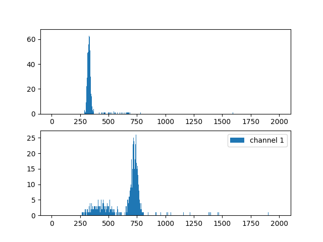

Note
Go to the end to download the full example code.
Testing Coincidence using a Na-22 Source
Introduction
# ------------
#
Coincidence Filtering of Sodium-22 (Na-22)
# ~~~~~~~~~~~~~~~~~~~~~~~~~~~~~~~~~~~~~~~~~~
#
# Sodium 22 (Na-22) is a radioactive isotope with one less neutron than
# the "stable" form of Sodium 23. With a half life of 2.60 years, it's a
# relatively shelf stable isotype making it conveinent in labs as a
# calibration.
#
# In most cases, the Na-22 emits a positron and decays into an excited
# Ne-22 nucleus. The Ne-22 nucleus then falls to ground state and emits of
# *1.2745 MeV* gamma ray.
#
# .. figure:: Na22_Coincidence_DATA/equation.png
# :alt: alt text
#
# alt text
#
# After this initial nuclear decay, the emitted positron generally
# annilihates with an electron and that reactions emits a pair of *.511
# MeV* gamma rays. Importantly, these annhilitation gamma rays are emitted
# in opposite directions.
#
# .. figure:: Na22_Coincidence_DATA/equation2.png
# :alt: alt text
#
# alt text
#
# Taking advantage of this, we can set up detectors opposite of each other
# on either side of our Na-22 source and selectively save primarily
# annihilation events using the FemtoDAQ Vireos coincidence filter.
#
# .. figure:: Na22_Coincidence_DATA/setup.png
# :alt: alt text
#
# alt text
#
# Experimental Setup
# ~~~~~~~~~~~~~~~~~~
#
# The Vireos **coincidence filter** allows you to selectively trigger on
# events which create a certain hit pattern on your detectors. In the case
# of *Na-22*, we want to only measure events which create pulses on our
# two detectors simultaneously. This will screen out the vast majority of
# noise events caused by \_Ne-22*\_ excitation or ambient noises such as
# cosmic rays. These noise sources are statistically unlikely to interact
# with two detectors simultaneously. Unlike the annhiliation decay which
# emits two opposing gamma rays perfectly in line with our detectors.
#
# .. figure:: Na22_Coincidence_DATA/pic_of_setup.jpeg
# :alt: alt text
#
# alt text
#
#
# Collecting Data
# ---------------
#
Setting up Environment
# ~~~~~~~~~~~~~~~~~~~~~~
#
# Were going to define some variables up front so they are easier to
# change later. ``TRIGGER_SENSITIVITY`` defines how sensitive the trigger
# is to capture a pulse. ``NUMBER_OF_EVENTS`` indicates how many events we
# are going to capture before stopping data collection
#
import skutils
import math
import numpy as np
import matplotlib.pyplot as plt
#VIREO_URL = "192.168.7.2" # USB IP address by default if using USB - This does not change
# VIREO_URL = "192.168.128.154"
VIREO_URL = "vireo-000012.tek"
TRIGGER_SENSITIVITY = 128
NUMBER_OF_EVENTS = 1_000
EXPERIMENT_NAME = "Edmonds_Na22_Demonstration"
#
Connect to your FemtoDAQ Vireo
# ~~~~~~~~~~~~~~~~~~~~~~~~~~~~~~~~~
#
# We can use the ``FemtoDAQController`` class to control our digitizer
# remotely in this python script. The FemtoDAQ Controller contains
# functions to control trigger, data capture, and recording configuration.
# We will use it here to configure our trigger parameters.
#
vireo = skutils.FemtoDAQController(VIREO_URL)
print( vireo.summary() )
Vireo-000012 (http://vireo-000012.tek)
Number of Channels : 2
Sampling Frequency : 100.0 MHz
ADC Bitdepth : 14 bits
Maximum Wave Length : 81.92us
Firmware Version : 5.5.0-0
Software Version : 5.4.0
Linux Image Version : 5.1.1
Configure Data Recording Parameters
# ~~~~~~~~~~~~~~~~~~~~~~~~~~~~~~~~~~~~~~
#
# Before capturing data, we need to configure the instrument to trigger at
# the appropriate level
#
# Uncomment to load defualt trigger settings - applicable for most experiments
# vireo.loadDefaultConfig()
# Configuring Trigger Settings
vireo.setTriggerSensitivity(0, TRIGGER_SENSITIVITY)
vireo.setTriggerSensitivity(1, TRIGGER_SENSITIVITY)
vireo.setTriggerXPosition(128)
vireo.setInvertADCSignal(0, True)
vireo.setInvertADCSignal(1, True)
vireo.setDigitalOffset(0, 640)
vireo.setDigitalOffset(1, 640)
# Enabling Triggers
vireo.setEnableTrigger(0, True)
vireo.setEnableTrigger(1, True)
# Configuring Pulse Windows
vireo.setPulseHeightAveragingWindow(4)
vireo.setTriggerActiveWindow(32)
vireo.setPulseHeightWindow(32)
Collecting Data without Coincidence Filtering
# ~~~~~~~~~~~~~~~~~~~~~~~~~~~~~~~~~~~~~~~~~~~~~
#
# Configuring Coincidence
vireo.configureCoincidence("multiplicity", 2)
# Configure Recording on CH0, CH1
vireo.configureRecording(channels_to_record=[0,1],
number_of_samples_to_capture = 192,
file_recording_name_prefix = EXPERIMENT_NAME,
file_recording_format = "igorph",
file_recording_data_output="pulse_summaries",
)
Start Waveform Capture
# ^^^^^^^^^^^^^^^^^^^^^^
#
vireo.start(NUMBER_OF_EVENTS)
# Wait for data to be collected up to a maximum of 5 minutes
timed_out = vireo.waitUntil(nevents=NUMBER_OF_EVENTS, timeout_time=300)
vireo.stop()
Download Data Files for Later Analysis
# ~~~~~~~~~~~~~~~~~~~~~~~~~~~~~~~~~~~~~~~~~
#
files = vireo.downloadLastRunDataFiles()
Vireo-000012 (http://vireo-000012.tek) Controller : downloaded `Edmonds_Na22_Demonstration_03.20.17PM_Apr14_2025_seq000001.itx` to 'C:\Users\Jeff\Documents\projects\skutils\examples\Experiments\Edmonds_Na22_Demonstration_03.20.17PM_Apr14_2025_seq000001.itx'
Grab Pulse Heights from all events
# ~~~~~~~~~~~~~~~~~~~~~~~~~~~~~~~~~~~~~
#
# First we are going to grab the pulse heights calculated by our firmware
# DSP.
#
#Skutils loader to display histogram from downloaded files
pulse_heights = []
for filename in files:
loader = skutils.IGORPulseHeightLoader(filename)
for event in loader:
pulse_heights.append(event.pulse_heights)
pulse_heights = np.asarray( pulse_heights )
ch0_ph = pulse_heights[:,0]
ch1_ph = pulse_heights[:,1]
Calculate a histogram using Numpy
# ~~~~~~~~~~~~~~~~~~~~~~~~~~~~~~~~~~~~
#
num_bins = 1000
hist0, edges0 = np.histogram(ch0_ph, bins=num_bins, range=(0, 2000))
hist1, edges1 = np.histogram(ch1_ph, bins=num_bins, range=(0, 2000))
import matplotlib.pyplot as plt
fig,axes = plt.subplots(2,1)
axes[0].bar(edges0[1:],hist0, width = 3.5, label="channel 0")
plt.legend()
axes[1].bar(edges1[1:],hist1, width = 3.5, label="channel 1")
print(np.sum(hist0))
print(np.sum(hist1))
plt.legend()
plt.show()

C:\Users\Jeff\Documents\projects\skutils\examples\Experiments\na22_coincidence.py:314: UserWarning: No artists with labels found to put in legend. Note that artists whose label start with an underscore are ignored when legend() is called with no argument.
plt.legend()
1000
999
Total running time of the script: (4 minutes 42.684 seconds)